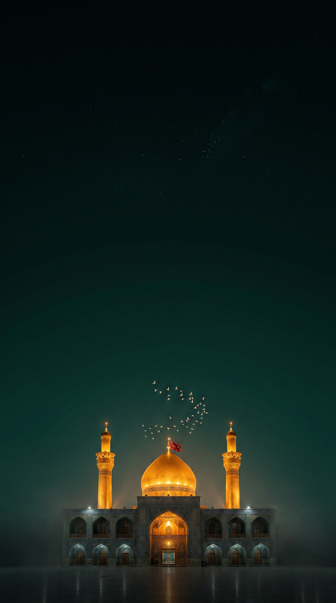
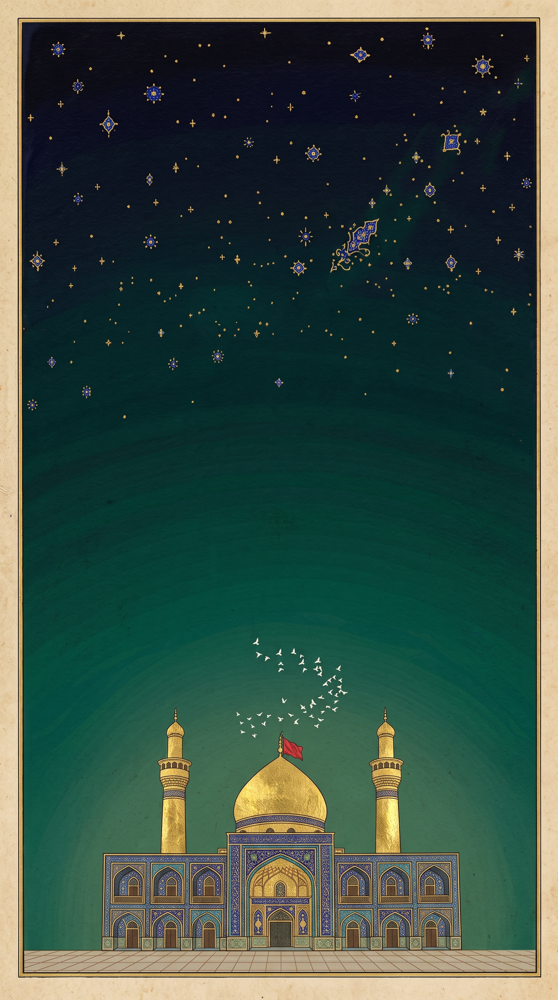
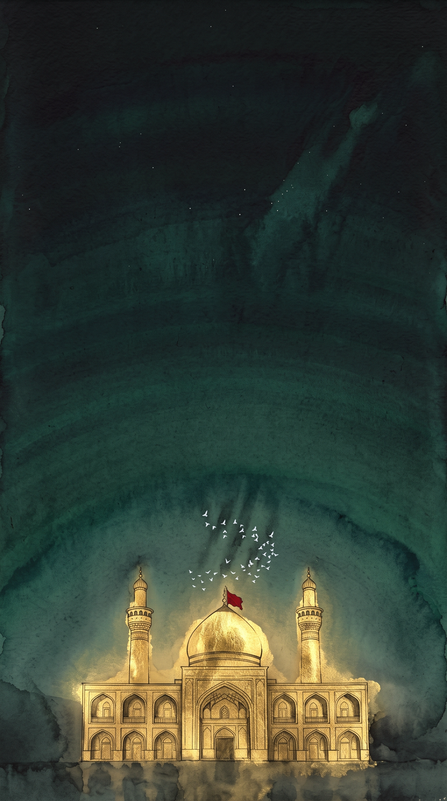
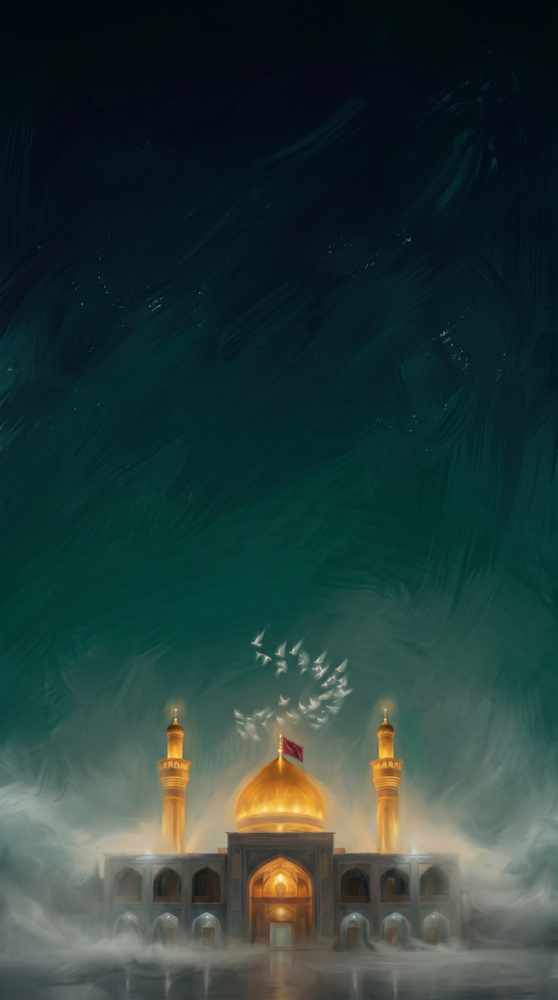
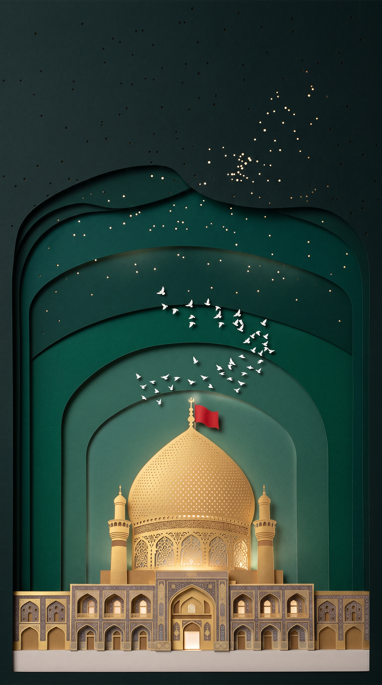

Same composition (shrine bottom third, vast emerald sky = the hadith text zone), five treatments. Judge at a squint: which one makes the first 3 seconds feel premium AND devotional? All five animate well; the loop costs ~72 credits once we pick.

CONTROL1 - PhotorealThe real place. Instant recognition and pilgrimage longing - the strongest emotional pull for a Shia audience.

2 - Persian MiniatureSafavid manuscript: gold leaf, lapis stars, aged paper. Museum-precious, culturally rooted. Ornate sky may compete with title text; paper border needs cropping.

3 - Ink + Gold LeafGold-leaf line drawing glowing out of ink washes. The most solemn and artistically profound. Beautifully mournful - almost Muharram-grade.

4 - Painterly MattePhotoreal's soft-spoken sibling: mist, brushwork, ember glow. Safe, lovely, least distinctive of the five.

MY PICK (ART)5 - Layered Paper-CutEmerald paper arches form a mihrab niche around a pierced, lit gold dome. Modern, crafted, luxury-brand premium - and it speaks the app's own design language (layered cards, emerald + gold). Animates as a living diorama (parallax layers, light through star-holes).